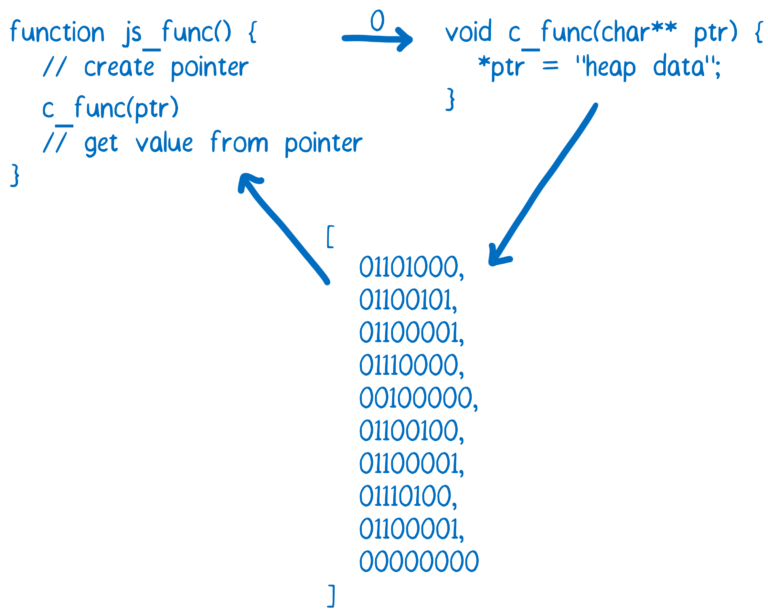

Hi! I'm Mariot
Mozilla TechSpeaker.
Python and JS Developer
Author of Beginning Git and GitHub (Apress, 2020).
Savior of Hyrule


Civilization VI
Football Manager
Let's start!
WebAssembly is

- Binary format
- A compilation target for other languages to compile to
- A powerup for JS applications
- Interface from/to JS
WebAssembly is not
- A programming language
- A replacement to JavaScript
Why do we need this?
Java Applets
Mathematical application

NASA World Wind
Why did Java Applets disappear?
- Need to install Java on your computer.
- Zero integration with the web.
- Lost strength due to Flash, Silverlight, HTML5
- Problems with mobile devices
- Lots of Security issues

....and thus, Java applets began to disappear...
....until JavaScript

But it has its problems...
Performance
How browsers run JS code
Source: Lin Clark © 2017.
Let's see an
execution example...
An addition in JS
function sum(a, b) {
return a + b;
}
Pretty simple, right?
It "should be a single" CPU instruction
How ECMA-262
defines an addition
- Let lref be the result of evaluating AdditiveExpression.
- Let lval be GetValue(lref).
- Let rref be the result of evaluating MultiplicativeExpression.
- Let rval be GetValue(rref).
- Let lprim be ToPrimitive(lval).
- Let rprim be ToPrimitive(rval).
- If Type(lprim) is String or Type(rprim) is String, then
- Return the String that is the result of concatenating ToString(lprim) followed by ToString(rprim)
- Return the result of applying the addition operation to ToNumber(lprim) and ToNumber(rprim).
Why?
You have to do some sacrifices

Understand Programming languages

Understand binary or low level code.
How to solve this?
WebAssembly
How browsers run WASM
Source: Lin Clark © 2017.
Binary format
Check it with WASM Code Explorer
WebAssembly Text Format
(module
(type $type0 (func (param i32)))
(type $type1 (func))
(import "sys" "print" (func $import0 (param i32)))
(memory (;0;) 200 200)
(export "memory" (memory 0))
(export "main" (func $func1))
(func $func1
i32.const 0
call $import0
)
(data (i32.const 0)
"Hello, world\00"
)
)Hello World in WAT
You might think it's just trendy....
No!
it has great support!
How it's created?
Compiler target
Each supported language's compiler will generate a .wasm file from the compiler.
Rust
rustc --target=wasm32-unknown-uknown project.rs -o project.htmlGO
GOOS=js GOARCH=wasm go build -o main.wasmEmscripten
It's a toolchain to take high languages code to WASM
C/C++ →
LLVM →
Emscripten + Binaryen →
WASM
Execute
emcc project.c -s WASM=1 -o project.htmlWhat do I get with this?
Compilation result
You'll get at least these 3 files:
- The .wasm file.
- JS code to import WASM module.
- HTML page to execute the WASM module.
Code interaction
Comunicate code between JS and WASM
Calls C functions from JS
C
#include <math.h>
extern "C" {
int int_sqrt(int x) {
return sqrt(x);
}
}JavaScript
int_sqrt = Module.cwrap('int_sqrt', 'number', ['number'])
int_sqrt(12)
int_sqrt(28)Call JS functions from C
With emscripten_run_script()
emscripten_run_script(
"alert('I love alerts')"
);With EM_ASM()
#include <emscripten.h>
int main() {
EM_ASM(
alert('DO NOT USE ALERTS!');
throw 'execution ready';
);
return 0;
}}What can I do with WASM?
WASM video editor
Applies video effects on realtime
Aprende C (Learn C)
A website to learn C;
code is executed at browser level
AutoCAD on the web
Source: Twitter.
WordPress Gutenberg Parser

WordPress' new editor uses a parser written in Rust.
PIB: PHP In the Browser
Zend interpreter migrated to WASM

More info at: https://github.com/oraoto/pib
We can go
full-stack with PHP!
Bye Bye JS! (Just kidding)
Future WASM features
- Multi-threading and Atomics
- Exception handling
- Garbage collection
- Global mutable variables
- SIMD.
- JS BigInt ←→ WebAssembly i64.
mariot.hianatra.com